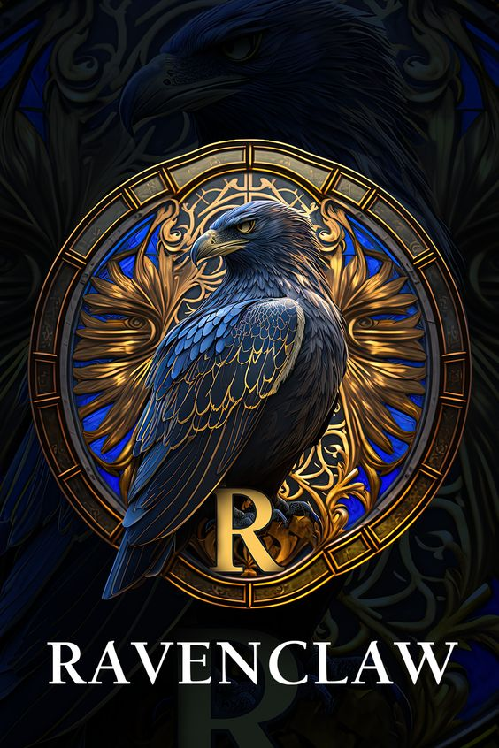
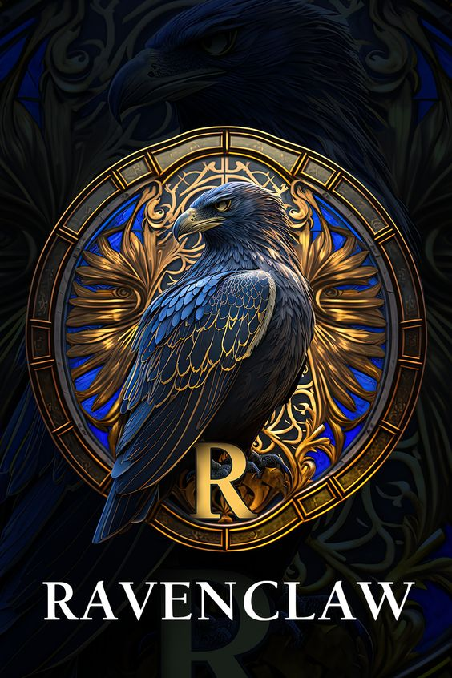

Te desafiamos a colocar cada casa de Hogwarts en su casillero correspondiente
Valora el aprendizaje, la sabiduría, el ingenio, y el intelecto como elementos importantes para formar parte de su casa. Al ser magos de mucho talento, Hermione Granger estuvo a punto de ser seleccionada por esta casa.
Miembros más famosos: Luna Lovegood, Cho Chang.
Cuenta con miembros ambiciosos, inteligentes, muy astutos y que tienden a ser líderes fuertes. Aunque también son unos supervivientes, lo que les hace pensar antes de actuar (al contrario que los Gryffindor), pese a tener un claro desprecio por las reglas.
Miembros más famosos: Voldemort, Draco Malfoy.
Se caracteriza por valorar la capacidad de trabajo, con estudiantes amigables y leales. Los estudiantes de esta casa son conocidos por ser trabajadores, amigables, leales y sin prejuicios.
Miembros más famosos: Newt Scamander, Cedric Diggory, Nymphadora Tonks, profesora Pomona Sporut.
Valora el coraje por encima de todo, pero también la osadía, el temple y la caballerosidad. Sus estudiantes son valientes, pero también muy imprudentes.
Miembros más famosos: Harry Potter, Ron Weasley, Hermione Granger, Albus Dumbledore.
 
